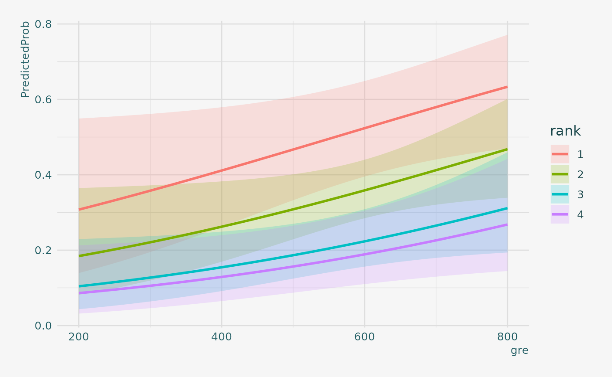

Logit Regression
Logit.Rmd
library(innteamUtils)
# Loading required package: data.table
library(data.table)
library(aod)
library(ggplot2)
theme_set(theme_innteam())Introduction
Logistic regression, also called a logit model, is mostly used to model dichotomous outcome variables. It can be said it is a Supervised Learning method used for Classification. In the logit model the log odds of the outcome is modeled as a linear combination of the predictor variables.
Please note that the purpose of this page is to show how to use various data analysis commands. It does not cover all aspects of the research process which researchers are expected to do. In particular, it does not cover data cleaning and checking, verification of assumptions, model diagnostics and potential follow-up analyses.
Table of Contents
Currently the following sets are available:
-
Data Description: a long-format table containing 4 NUTS levels from EUROSTAT for Italy.
-
Analysis methods you might consider: a wide-format table containing old and new Italian municipalities (and higher level denomination) names.
-
Using the logit model: a long-format table containing all NACE Rev.2 levels in Italian language.
-
Things to consider: simple table containing the number of insurance agencies and subagents by Italian province. Strictly for internal use only.
Description of the Data
For our data analysis below, we are going to expand into graduate school available from the UCLA Statistics Department website.
mydata = fread("https://stats.idre.ucla.edu/stat/data/binary.csv")
## view the first few rows of the data
head(mydata)
# admit gre gpa rank
# 1: 0 380 3.61 3
# 2: 1 660 3.67 3
# 3: 1 800 4.00 1
# 4: 1 640 3.19 4
# 5: 0 520 2.93 4
# 6: 1 760 3.00 2
tail(mydata)
# admit gre gpa rank
# 1: 1 460 3.99 3
# 2: 0 620 4.00 2
# 3: 0 560 3.04 3
# 4: 0 460 2.63 2
# 5: 0 700 3.65 2
# 6: 0 600 3.89 3This dataset has a binary response (outcome, dependent) variable called admit. There are three predictor variables: gre, gpa and rank. We will treat the variables gre and gpa as continuous. The variable rank takes on the values 1 through 4. Institutions with a rank of 1 have the highest prestige, while those with a rank of 4 have the lowest. We can get basic descriptives for the entire data set by using summary. To get the standard deviations, we use sapply to apply the sd function to each variable in the dataset.
summary(mydata)
# admit gre gpa rank
# Min. :0.0000 Min. :220.0 Min. :2.260 Min. :1.000
# 1st Qu.:0.0000 1st Qu.:520.0 1st Qu.:3.130 1st Qu.:2.000
# Median :0.0000 Median :580.0 Median :3.395 Median :2.000
# Mean :0.3175 Mean :587.7 Mean :3.390 Mean :2.485
# 3rd Qu.:1.0000 3rd Qu.:660.0 3rd Qu.:3.670 3rd Qu.:3.000
# Max. :1.0000 Max. :800.0 Max. :4.000 Max. :4.000
sapply(mydata, sd)
# admit gre gpa rank
# 0.4660867 115.5165364 0.3805668 0.9444602
## two-way contingency table of categorical outcome and predictors we want
## to make sure there are not 0 cells
xtabs(~admit + rank, data = mydata)
# rank
# admit 1 2 3 4
# 0 28 97 93 55
# 1 33 54 28 12Analysis methods you might consider
Below is a list of some analysis methods you may have encountered. Some of the methods listed are quite reasonable while others have either fallen out of favor or have limitations.
Logistic regression, the focus of this page.
Probit regression. Probit analysis will produce results similar logistic regression. The choice of probit versus logit depends largely on individual preferences.
OLS regression. When used with a binary response variable, this model is known as a linear probability model and can be used as a way to describe conditional probabilities. However, the errors (i.e., residuals) from the linear probability model violate the homoskedasticity and normality of errors assumptions of OLS regression, resulting in invalid standard errors and hypothesis tests.
Two-group discriminant function analysis. A multivariate method for dichotomous outcome variables.
Using the Logit Model
The code below estimates a logistic regression model using the glm (generalized linear model) function. First, we convert rank to a factor to indicate that rank should be treated as a categorical variable.
setDT(mydata)
mydata[, rank := factor(rank)]
mylogit = glm(admit ~ gre + gpa + rank, data = mydata, family = "binomial")Since we gave our model a name (mylogit), R will not produce any output from our regression. In order to get the results we use the summary command:
summary(mylogit)
#
# Call:
# glm(formula = admit ~ gre + gpa + rank, family = "binomial",
# data = mydata)
#
# Deviance Residuals:
# Min 1Q Median 3Q Max
# -1.6268 -0.8662 -0.6388 1.1490 2.0790
#
# Coefficients:
# Estimate Std. Error z value Pr(>|z|)
# (Intercept) -3.989979 1.139951 -3.500 0.000465 ***
# gre 0.002264 0.001094 2.070 0.038465 *
# gpa 0.804038 0.331819 2.423 0.015388 *
# rank2 -0.675443 0.316490 -2.134 0.032829 *
# rank3 -1.340204 0.345306 -3.881 0.000104 ***
# rank4 -1.551464 0.417832 -3.713 0.000205 ***
# ---
# Signif. codes: 0 '***' 0.001 '**' 0.01 '*' 0.05 '.' 0.1 ' ' 1
#
# (Dispersion parameter for binomial family taken to be 1)
#
# Null deviance: 499.98 on 399 degrees of freedom
# Residual deviance: 458.52 on 394 degrees of freedom
# AIC: 470.52
#
# Number of Fisher Scoring iterations: 4- In the output above, the first thing we see is the call, this is R reminding us what the model we ran was, what options we specified, etc.
- Next we see the deviance residuals, which are a measure of model fit. This part of output shows the distribution of the deviance residuals for individual cases used in the model. Below we discuss how to use summaries of the deviance statistic to assess model fit.
- The next part of the output shows the coefficients, their standard errors, the z-statistic (sometimes called a Wald z-statistic), and the associated p-values. Both
greandgpaare statistically significant, as are the three terms forrank.The logistic regression coefficients give the change in the log odds of the outcome for a one unit increase in the predictor variable.- For every one unit change in
gre, the log odds of admission (versus non-admission) increases by0.002.
- For a one unit increase in
gpa, the log odds of being admitted to graduate school increases by0.804.
- The indicator variables for
rankhave a slightly different interpretation. For example, having attended an undergraduate institution withrankof 2, versus an institution with arankof 1, changes the log odds of admission by-0.675.
- For every one unit change in
- Below the table of coefficients are fit indices, including the null and deviance residuals and the AIC. Later we show an example of how you can use these values to help assess model fit.
We can use the confint function to obtain confidence intervals for the coefficient estimates. Note that for logistic models, confidence intervals are based on the profiled log-likelihood function. We can also get CIs based on just the standard errors by using the default method.
## CIs using profiled log-likelihood
confint(mylogit)
# Waiting for profiling to be done...
# 2.5 % 97.5 %
# (Intercept) -6.2716202334 -1.792547080
# gre 0.0001375921 0.004435874
# gpa 0.1602959439 1.464142727
# rank2 -1.3008888002 -0.056745722
# rank3 -2.0276713127 -0.670372346
# rank4 -2.4000265384 -0.753542605
## CIs using standard errors
confint.default(mylogit)
# 2.5 % 97.5 %
# (Intercept) -6.2242418514 -1.755716295
# gre 0.0001202298 0.004408622
# gpa 0.1536836760 1.454391423
# rank2 -1.2957512650 -0.055134591
# rank3 -2.0169920597 -0.663415773
# rank4 -2.3703986294 -0.732528724We can test for an overall effect of rank using the wald.test function of the aod library. The order in which the coefficients are given in the table of coefficients is the same as the order of the terms in the model. This is important because thewald.test function refers to the coefficients by their order in the model. We use the wald.testfunction. b supplies the coefficients, while Sigma supplies the variance covariance matrix of the error terms, finally Terms tells R which terms in the model are to be tested, in this case, terms 4, 5, and 6, are the three terms for the levels of rank.
wald.test(b = coef(mylogit), Sigma = vcov(mylogit), Terms = 4:6)
# Wald test:
# ----------
#
# Chi-squared test:
# X2 = 20.9, df = 3, P(> X2) = 0.00011You can also exponentiate the coefficients and interpret them as odds-ratios. R will do this computation for you. To get the exponentiated coefficients, you tell R that you want to exponentiate (exp), and that the object you want to exponentiate is called coefficients and it is part of mylogit (coef(mylogit)). We can use the same logic to get odds ratios and their confidence intervals, by exponentiating the confidence intervals from before. To put it all in one table, we use cbind to bind the coefficients and confidence intervals column-wise.
exp(coef(mylogit))
# (Intercept) gre gpa rank2 rank3 rank4
# 0.0185001 1.0022670 2.2345448 0.5089310 0.2617923 0.2119375
exp(cbind(OR = coef(mylogit), confint(mylogit)))
# Waiting for profiling to be done...
# OR 2.5 % 97.5 %
# (Intercept) 0.0185001 0.001889165 0.1665354
# gre 1.0022670 1.000137602 1.0044457
# gpa 2.2345448 1.173858216 4.3238349
# rank2 0.5089310 0.272289674 0.9448343
# rank3 0.2617923 0.131641717 0.5115181
# rank4 0.2119375 0.090715546 0.4706961Now we can say that for a one unit increase in gpa, the odds of being admitted to graduate school (versus not being admitted) increase by a factor of 2.23. For more information on interpreting odds ratios see How do I interpret odds ratios in logistic regression? . Note that while R produces it, the odds ratio for the intercept is not generally interpreted.
You can also use predicted probabilities to help you understand the model. Predicted probabilities can be computed for both categorical and continuous predictor variables. In order to create predicted probabilities we first need to create a new data frame with the values we want the independent variables to take on to create our predictions.
We will start by calculating the predicted probability of admission at each value of rank, holding gre and gpa at their means. First we create and view the data frame.
newdata1 = with(mydata, data.frame(gre = mean(gre), gpa = mean(gpa), rank = factor(1:4)))
## view data frame
newdata1
# gre gpa rank
# 1 587.7 3.3899 1
# 2 587.7 3.3899 2
# 3 587.7 3.3899 3
# 4 587.7 3.3899 4These objects must have the same names as the variables in your logistic regression above (e.g. in this example the mean for gre must be named gre). Now that we have the data frame we want to use to calculate the predicted probabilities, we can tell R to create the predicted probabilities.
newdata1$rankP = predict(mylogit, newdata = newdata1, type = "response")
newdata1
# gre gpa rank rankP
# 1 587.7 3.3899 1 0.5166016
# 2 587.7 3.3899 2 0.3522846
# 3 587.7 3.3899 3 0.2186120
# 4 587.7 3.3899 4 0.1846684In the above output we see that the predicted probability of being accepted into a graduate program is 0.52 for students from the highest prestige undergraduate institutions (rank=1), and 0.18 for students from the lowest ranked institutions (rank=4), holding gre and gpa at their means. We can do something very similar to create a table of predicted probabilities varying the value of gre and rank. We are going to plot these, so we will create 100 values of gre between 200 and 800, at each value of rank (i.e., 1, 2, 3, and 4).
newdata2 = with(mydata, data.frame(gre = rep(seq(from = 200, to = 800, length.out = 100), 4), gpa = mean(gpa), rank = factor(rep(1:4, each = 100))))The code to generate the predicted probabilities (the first line below) is the same as before, except we are also going to ask for standard errors so we can plot a confidence interval. We get the estimates on the link scale and back transform both the predicted values and confidence limits into probabilities.
newdata3 = cbind(newdata2, predict(mylogit, newdata = newdata2, type = "link", se = TRUE))
newdata3 = within(newdata3, {
PredictedProb <- plogis(fit)
LL <- plogis(fit - (1.96 * se.fit))
UL <- plogis(fit + (1.96 * se.fit))
})
## view first few rows of final dataset
head(newdata3)
# gre gpa rank fit se.fit residual.scale UL
# 1 200.0000 3.3899 1 -0.8114870 0.5147714 1 0.5492064
# 2 206.0606 3.3899 1 -0.7977632 0.5090986 1 0.5498513
# 3 212.1212 3.3899 1 -0.7840394 0.5034491 1 0.5505074
# 4 218.1818 3.3899 1 -0.7703156 0.4978239 1 0.5511750
# 5 224.2424 3.3899 1 -0.7565919 0.4922237 1 0.5518545
# 6 230.3030 3.3899 1 -0.7428681 0.4866494 1 0.5525464
# LL PredictedProb
# 1 0.1393812 0.3075737
# 2 0.1423880 0.3105042
# 3 0.1454429 0.3134499
# 4 0.1485460 0.3164108
# 5 0.1516973 0.3193867
# 6 0.1548966 0.3223773It can also be helpful to use graphs of predicted probabilities to understand and/or present the model. We will use the ggplot2 package for graphing. Below we make a plot with the predicted probabilities, and 95% confidence intervals.
newdata3 |>
ggplot(aes(x = gre, y = PredictedProb)) +
geom_ribbon(aes(ymin = LL,
ymax = UL, fill = rank), alpha = 0.2) +
geom_line(aes(colour = rank),
size = 1)
We may also wish to see measures of how well our model fits. This can be particularly useful when comparing competing models. The output produced by summary(mylogit) included indices of fit (shown below the coefficients), including the null and deviance residuals and the AIC. One measure of model fit is the significance of the overall model. This test asks whether the model with predictors fits significantly better than a model with just an intercept (i.e., a null model). The test statistic is the difference between the residual deviance for the model with predictors and the null model. The test statistic is distributed chi-squared with degrees of freedom equal to the differences in degrees of freedom between the current and the null model (i.e., the number of predictor variables in the model). To find the difference in deviance for the two models (i.e., the test statistic) we can use the command:
with(mylogit, null.deviance - deviance)
# [1] 41.45903The degrees of freedom for the difference between the two models is equal to the number of predictor variables in the mode, and can be obtained using:
with(mylogit, df.null - df.residual)
# [1] 5Finally, the p-value can be obtained using:
with(mylogit, pchisq(null.deviance - deviance, df.null - df.residual, lower.tail = FALSE))
# [1] 7.578194e-08The chi-square of 41.46 with 5 degrees of freedom and an associated p-value of less than 0.001 tells us that our model as a whole fits significantly better than an empty model. This is sometimes called a likelihood ratio test (the deviance residual is -2*log likelihood). To see the model’s log likelihood, we type:
logLik(mylogit)
# 'log Lik.' -229.2587 (df=6)Thing to Consider
Empty cells or small cells: You should check for empty or small cells by doing a crosstab between categorical predictors and the outcome variable. If a cell has very few cases (a small cell), the model may become unstable or it might not run at all.
Separation or quasi-separation (also called perfect prediction), a condition in which the outcome does not vary at some levels of the independent variables. See: What is complete or quasi-complete separation in logistic/probit regression and how do we deal with them? for information on models with perfect prediction.
Sample size: Both logit and probit models require more cases than OLS regression because they use maximum likelihood estimation techniques. It is sometimes possible to estimate models for binary outcomes in datasets with only a small number of cases using exact logistic regression. It is also important to keep in mind that when the outcome is rare, even if the overall dataset is large, it can be difficult to estimate a logit model.
Diagnostics: The diagnostics for logistic regression are different from those for OLS regression. For a discussion of model diagnostics for logistic regression, see Hosmer and Lemeshow (2000, Chapter 5). Note that diagnostics done for logistic regression are similar to those done for probit regression.